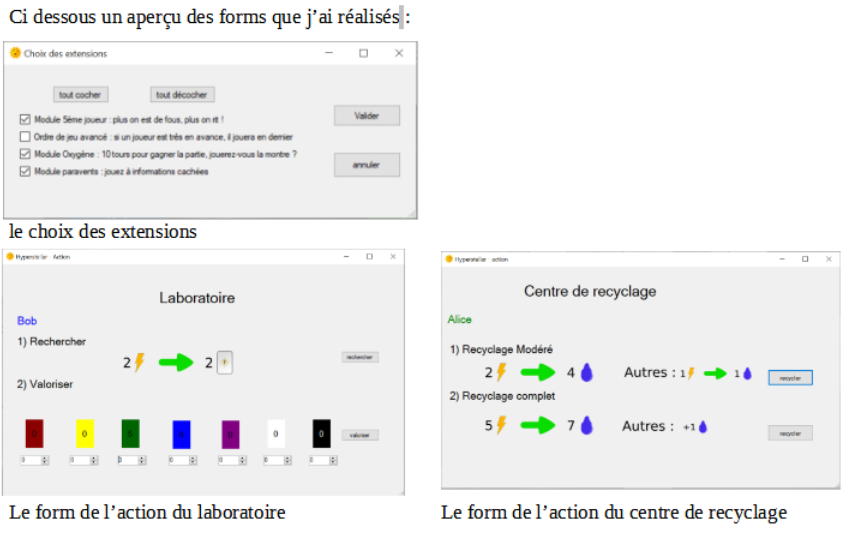

Mon projet le plus récent
Hyperstellar : numériser un jeu de société
Csharp, windows forms, visual studio 2022
Ce projet consistait en la création de jeu de société en C# de A à Z en utilisant l’éditeur visual studio 2022.
Au cours de ce projet j’ai été amené à m’occuper du windows form permettant de choisir les extensions : j’ai dû
par la suite expliquer à mes coéquipiers comment se servir des informations apportées par le form.
J’ai ensuite réalisé les algorithmes de résolution des actions : cela représente deux forms qui impactent une
grande majorité des éléments du jeu chacun avec des algorithmes complètements différents ainsi que deux
algorithmes plus simples pour les deux autres actions. Je me suis aussi occupé de l’algorithme gérant
l’enchaînement d’actions
Parmi les mécaniques fondamentales du jeu que j’ai du implémenter, il y a eu tout ce qui concerne la gestion des
cartes de leur création à leur utilisation lors de chaque tour de jeu.
J’ai aussi documenté mon code en entier tout au cours du projet.
Nous avons utilisé git lors de ce projet. Ayant des problèmes de clonage de dépôt sous windows je me suis adapté
en passant par le web IDE de gitlab pour push. Les merges de mon travail ont étés réalisés en coopération depuis
la session d’un de mes coéquipiers.
Ce projet m’a permis de progresser dans l’utilisation du C# notamment en ce qui concerne les windows form, dans
l’organisation et la communication en équipe.

Download the pdf